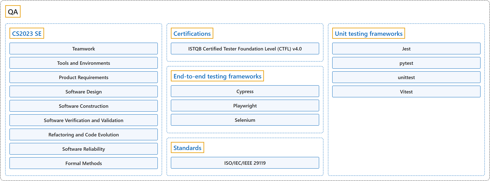

QA
Classification

Glossary
| Term | Definition | 中文翻译 | Source |
|---|---|---|---|
| QA 质量保证 |
"QA is a process-oriented, preventive approach that focuses on the implementation and improvement of processes." | QA 是一种面向过程的预防性方法，侧重于过程的实施与改进。 | International Software Testing Qualifications Board, 2024, section 1.2.2 "Testing and Quality Assurance (QA)", para. 3 |
| CS2023 SE CS2023 SE |
"This is an essential insight: while programming is the skill that governs our ability to write a program, software engineering is distinct in two dimensions: time and people." | 这是一个关键的洞见：编程是决定我们能否写出程序的技能，而软件工程的不同在于两个维度：时间和人。 | Joint Task Force on Computing Curricula, 2024, SE "Preamble" section, para. 1 |
| Certifications 认证 |
"The ISTQB® Certified Tester Foundation Level (CTFL) certification is the cornerstone of essential testing knowledge that can be applied to real-world scenarios." | ISTQB® 认证测试工程师基础级（CTFL）认证是基础测试知识的基石，这些知识可以应用于真实场景。 | International Software Testing Qualifications Board, n.d., "Overview" section, para. 1 |
| End-to-end testing frameworks 端到端测试框架 |
"Playwright Test is an end-to-end test framework for modern web apps." | Playwright Test 是一个端到端测试框架，面向现代 Web 应用。 | Microsoft, n.d., "Installation" page, para. 1 |
| Standards 标准 |
"This document specifies general concepts in software testing and presents key concepts for the ISO/IEC/IEEE 29119 series." | 本文件规定了软件测试的一般概念，并给出 ISO/IEC/IEEE 29119 系列的关键概念。 | International Organization for Standardization, 2022, "Abstract" section |
| Unit testing frameworks 单元测试框架 |
"The unittest unit testing framework was originally inspired by JUnit and has a similar flavor as major unit testing frameworks in other languages." | unittest 这个单元测试框架最初受 JUnit 启发，风格与其他语言中的主流单元测试框架相似。 | Python Software Foundation, n.d., "unittest: Unit testing framework" page, para. 1 |
References
Cypress.io. (n.d.). Cypress documentation (Version 16.2.0). Retrieved October 25, 2026, from https://docs.cypress.io/app/get-started/why-cypress
International Organization for Standardization. (2022). Software and systems engineering, Software testing, Part 1: General concepts (ISO/IEC/IEEE Standard No. 29119-1:2022). https://www.iso.org/standard/81291.html
International Software Testing Qualifications Board. (n.d.). Certified tester foundation level (CTFL) v4.0. Retrieved October 24, 2026, from https://istqb.org/certifications/certified-tester-foundation-level-ctfl-v4-0/
International Software Testing Qualifications Board. (2024). Certified Tester Foundation Level syllabus (Version 4.0.1). https://istqb.org/wp-content/uploads/2024/11/ISTQB_CTFL_Syllabus_v4.0.1.pdf
Joint Task Force on Computing Curricula. (2024). Computer science curricula 2023. Association for Computing Machinery. https://doi.org/10.1145/3664191
Microsoft. (n.d.). Playwright documentation (Version 1.64.1). Retrieved October 25, 2026, from https://playwright.dev/docs/intro
OpenJS Foundation. (n.d.). Jest documentation (Version 30.5.2). Retrieved October 25, 2026, from https://jestjs.io/docs/getting-started
pytest-dev. (n.d.). pytest documentation (Version 9.1.1). Retrieved October 25, 2026, from https://docs.pytest.org/en/stable/
Python Software Foundation. (n.d.). unittest: Unit testing framework (Python 3.15.1). The Python standard library. Retrieved October 25, 2026, from https://docs.python.org/3/library/unittest.html
Selenium project. (n.d.). Selenium documentation (Version 4.51.0). Retrieved October 25, 2026, from https://www.selenium.dev/documentation/
Vitest team. (n.d.). Vitest documentation (Version 5.0.5). Retrieved October 25, 2026, from https://vitest.dev/guide/